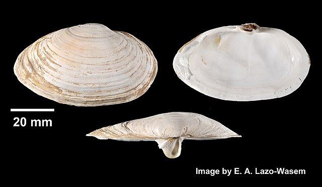
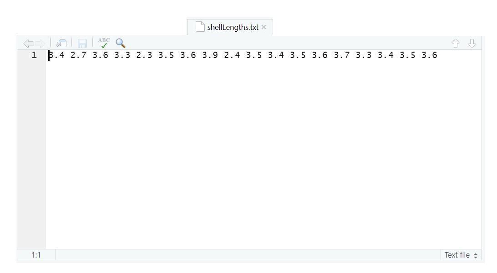
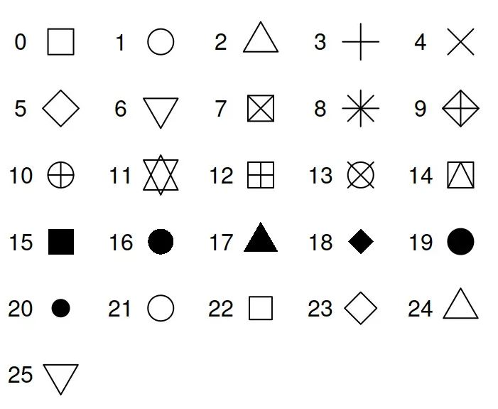
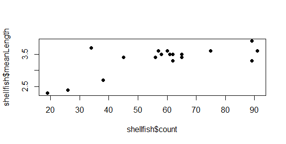
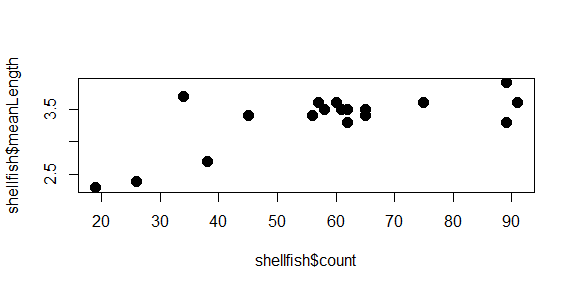
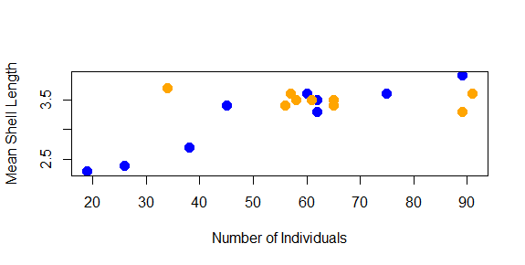
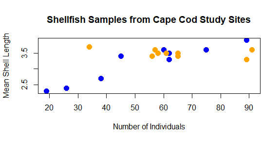
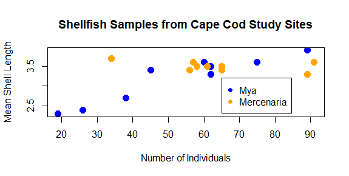

6 Introducing R and RStudio
This week’s lab is aimed at familiarizing you with R and RStudio. R is a “free software environment for statistical computing and graphics.” While R was built primarily for statistical work, it serves many functions that extend well beyond statistics. R works as both a scripting environment (where programs are written and then run) and a command line interface (where commands are entered and return values immediately). R and its packages are freely available and are supported by a large user base.
Before we can get to working with data and , it is important to understand some fundamental concepts in computing and how they work in R, specifically. In this section you will learn how to:
navigate the RStudio interface
use basic commands in R
differentiate between object types in R
visualize data in R
6.1 Navigating RStudio
R can be operated using the command line interface alone, but this course will make use of RStudio for dealing with R code. RStudio is an integrated development environment (IDE), which is used to help operate R, organize R code, and handle visualisation within the same window. The IDE makes the job of interacting with R a lot easier.
To begin, open RStudio. You should see a window that looks like this:
There are four main areas that you should be concerned with at this stage:
Dropdown menus These function in much the same way that menus in other programs do. The File menu, for example, is where you can create, open, save, and close files.
Environments pane This pane contains information related to the information currently stored in the system. In particular, there are two tabs which show either the objects stored in the current session (Environment), or the history of commands entered at the command line (History).
Console pane Contains the command line, where commands are passed to R by the user.
Output pane Includes five tabs where outputs (e.g., plots) and other R features can be viewed (discussed below). At the start, this is showing the file system in the current working directory.
An additional pane, the Source pane, is typically hidden when first starting RStudio, and will be discussed later. Most activity takes place in the Console pane. Depending on what actions you are undertaking in the Console pane, different things may occur in the Output and Environment panes. To see how this works, try typing the following command into the command line (indicated by an >) in the Console pane, and then press enter:
plot(hist(rnorm(50,0,1)))
This piece of code uses the plot function to plot whatever is inside the outermost brackets. The next bit of code uses the hist function to generate a histogram (frequency plot) of some data referenced inside the next set of brackets. Those data are a set of 50 random numbers drawn from a normal distribution, generated using the rnorm command, with a mean of 0 and a standard deviation of 1.
The Navigation pane should now jump to the Plots tab, and the result should look something like this:

It’s OK if the plot you see looks a little different from the image above: your instance of R will generate different sets of random numbers, but you should see a histogram that is centered near a value of 0.
It’s also more than OK if you don’t understand how the code works at this stage, the point here is just to demonstrate how the command line works and how different components of RStudio operate in order to visualize ‘data’. In addition to Plots, other tabs in the Navigation Pane include
File Provides a file explorer for your computer, with the default file open to the working directory.
Packages Shows which function packages (also sometimes called libraries) are installed on this computer and active in this session.
Help Provides access to R help documentation, this opens automatically when calls for help are made at the command line using ? or ?? (we’ll learn about this very soon).
Viewer Displays locally generated documents (HTML, PDF, etc).
Presentation Displays outputs from a Quarto presentation (we’ll learn about these later).
Have a look through the drop-down menus and try and find the following helpful options:
Interrupt R This will stop the current operation happening in R. This is critical for instances where R is doing something you don’t expect and you want it to stop.
Comment/Uncomment Lines This will convert highlighted code to comments, or text that is not run by R. This is really useful for debugging your code when you want to try running a code with and without certain parts.
Install Packages This opens a window that will allow you to search for packages available through the R package repository (CRAN). Good for when you can’t quite remember the name of a package!
6.2 Working with R at the command line
Let’s do some more with the command line. First, well start off with a simple expression:
8 + 2
Once you’ve entered this (by pressing Enter or Return), R should immediately return the following:
[1] 10
Leaving aside the [1] for the moment, you can see from this interaction R can identify these as numbers, as well as the operator + for addition, so it will perform the addition operation on the two numbers. R uses a number of standard operators for basic math operations, such as:
| Operation | Example |
|---|---|
| Addition | 8 + 2 |
| Subtraction | 8 - 2 |
| Multiplication | 8 * 2 |
| Division | 8 / 2 |
| Exponent | 8 ^ 2 |
But these sorts of things are about the limits of what R knows by itself. For example, we could throw R for a loop by asking it to add the letter a to the number 2:
a + 2
This should produce an error that looks something like this:
Error: object 'a' not found
You and I know that you can’t just add the letter a to the number 2. But R doesnt know why this is the case. R doesnt even know what the letter a is. All R knows is that we’ve asked it to add 2 to something unfamiliar labeled a.
6.2.1 Assigning values to objects
Imagine for a moment that this were an algebra problem, and a stood for something that can be added to 2. In algebra, this is known as a variable. In order for the computer to know what the variable a is, we have to define it as an object in the computer’s memory. To define something in R, we use the assignment operator, which is composed of the ‘less than’ symbol and a hyphen, which taken together resemble an arrow like so:
<-
For example, if we wanted to define a as having a value of 8, we can do it this way:
a<-8
R will read this command as “Let a have a value of 8”. Now if we ask the computer to tell us what a is:
a
It should respond like this:
[1] 8
R now interprets the letter a as being equivalent to the number 8. If we go back to our original expression of a + 2
a + 2
we will get the same answer as 8 + 2:
[1] 10
Again, don’t worry too much about the number in square brackets, we’ll get to that soon.
Try adding, subtracting, multiplying a by other values. What about stringing together multiple math operators?
What do you think will happen if you multiply a by a?
The assignment operator (
<-) can work in the other direction (->) as well! Try assigning 6 to the variable b with->, keeping in mind what sides 6 and b should be on.
6.2.2 Updating a value
At the moment, R recognizes the letter a as standing for the number 8. We can change this value simply by reassigning a new value to a:
a<-9
Now a is 9. And when we add 2…
a + 2
…we get a new value:
[1] 11
Great! Because R currently reads a as a number (9), we can also assign a new value to the object a using it inside an expression, like this:
a<-a + 1
R interprets this as something like “Let a have a value of a plus 1”. Since a was equal to 9, this new assignment gives it that value plus 1. So if we look at the value of a…
a
…we should see it updated from 9 to 10:
[1] 10
By using the assignment operator before the expression, our value for a is now the result of that expression: 10. At the moment, this may not seem very impressive, updating values of stored objects is one of the keys of computer programming.
Try guessing what the final value of a would be if you entered the following commands in order:
a+8a-5a<-a+2a<-16a<-a/2
6.2.3 Functions
We can also perform a number of built-in functions on objects like numbers or variables. Functions operate typically by stating the function name in R, followed by a set of input values, called arguments, that are contained in parentheses (). For example, let’s set to a value of 5:
a<-5
Now if we wanted to find the square root of the current value of a, we could use the sqrt function like so:
sqrt(a)
…we should get the following:
[1] 2.236068
Alternatively, a situation might come up where you want to repeat the value of a 10 times. To do this, you can use the rep function:
rep(a,10)
This gives us the following:
[1] 5 5 5 5 5 5 5 5 5 5
The rep function accepts two arguments: the object to be repeated (a), and the number of times it is to be repeated (10). These two items are separated by a comma. The function produces ten instances of the value of a, which is ten 5s. This type of data is called a vector, or a collection of values of a given type (in this case, numbers). Different functions will accept different arguments and produce different types of objects, and this information is given in the Help documentation.
So what’s the deal with [1] appearing next to each answer so far? The [1] indicates the position of the value immediately following it in a vector. This is particularly useful when you’re looking at very long vectors. For example, try using rep to create 100 instances of a:
rep(a,100)
The result should look something like this (your position numbers may be slightly different):
[1] 5 5 5 5 5 5 5 5 5 5 5 5 5 5 5 5 5 5 5 5 5 5 5 5 5 5 5 5 5 5 5 5 5 5 5 5
[37] 5 5 5 5 5 5 5 5 5 5 5 5 5 5 5 5 5 5 5 5 5 5 5 5 5 5 5 5 5 5 5 5 5 5 5 5
[73] 5 5 5 5 5 5 5 5 5 5 5 5 5 5 5 5 5 5 5 5 5 5 5 5 5 5 5 5
Here, the first line starts contains elements 1 to 36 of the vector. The second line starts at element 37, indicated by the number in square brackets, and contains elements 37 to 72. The last line contains elements 73 to 100.
Most of R’s functions are vectorized, which means that they work simultaneously across all elements in a vector. We’ll learn more about this later on, but just keep in mind that these numbers in square brackets are just marking position in a vector.
6.3 Looking closer at data objects in R
Data are individual pieces of information, while datasets are a way of structuring and organizing data related to a body of work. R stores both data and datasets as different kinds of objects. This section discusses a number of the commonly-encountered object types in R. Try out the examples, but don’t worry if it doesn’t all stick right away. If you run into a problem with object types, it’s helpful just to know that different types of objects exist.
6.3.1 Atomic vectors
Atomic vectors are the primary way that R stores data. These can be used in expressions and functions, or combined into compound class objects (see below). An atomic vector with a single value is sometimes called a scalar.
The main rule with vectors is that they are comprised of a single type of data. You can determine what type of data a vector contains using the typeof function. There are a few of these, but by far the most common are numeric, logical, and character vectors.
6.3.1.1 Numeric
As shown above, R can interpret numbers in the same way a calculator does. There are two categories of numeric vectors: integer and double. An integer is stored as a whole number, while a double number can be any number, but includes storage space for decimal values1. Some mathematical terms that count as numerical objects are either built into R, such as using pi for ùúã, or require some minor coding, like exp(1) for e. Below you can see some examples and how R interprets them.
| Command line | R value |
|---|---|
| 42 | 42 |
| 867.5309 | 867.5309 |
| pi | 3.141593 |
| exp(1) | 2.718282 |
| sqrt(4) | 2 |
An important thing to keep in mind here is that R treats all numbers as double type by default, and for this course we’ll be using numbers stored as double type pretty much exclusively. There are computational reasons why you might want to store values as integers (conserving space, converting to another coding language that requires integers, etc.), but these are rare for most data analysis and visualization activities.
6.3.1.2 Logical
A logical (or Boolean) vector in R has values of either TRUE or FALSE, or shortened to T and F, and these are always expressed in capital letters. Some operations in R will return values as either TRUE or FALSE, while some functions may require input in the form of a logical value. Here are some examples:
2 == 2
[1] TRUE
2 == 3
[1] FALSE
s<-2==3
typeof(s)
[1] "logical"
One thing to note here is that, when determining equivalence, a double equals sign (==) is used. This is because a single equals sign (=) is another way of assigning a values to variables.
6.3.1.3 Character
A character vector (also referred to as a string) is text that is meant to be read as text. R cannot interpret the meaning of the text directly, but some functions require character vectors for input. Elements in a character vector are surrounded by quote marks (")2.
text<-"text"
typeof(text)
[1] "character"
Double, logical, or character: what type of data would the following produce? Make your best guess for each item, and then use the typeof function to check your answers:
2+2
(2+2)==4
T
typeof(42)
“false”
6.3.1.4 Using vectors to store data
For work in data analysis and visualization, these different kinds of objects are used to store different kinds of information. For example, if we were conducting a study of recreational shellfish harvesting at Cape Cod beaches, character vectors might be used to record the names of the shellfish species, while numerical vectors could be used for things like species counts.
A vector is a collection of objects of a single type, presented as an ordered row. Each object in a vector has a value as well as a position. Vectors can be created by entering the objects, separated by commas, into a parentheses with a c at the front (e.g., c()). Here, we’ll create two vectors for counts of two different kinds of clams:


Let’s say we’ve done counts for these two shellfish types at 9 different sites. First, a vector of 9 counts for the soft-shelled clams:
Mya<-c(45,38,75,62,19,62,60,89,26)
Then another 9 counts for the quahogs:
Mercenaria<-c(65,56,58,57,34,89,65,61,91)
These data are purely fictional, but we can use them to show some key aspects of working with vector data. Individual objects or groups of objects in a vector can be accessed by entering the name of the vector with their position number into a set of square brackets ([]).
Mya[5]{#color: blue style=“color: blue”}
[1] 19
For multiple objects, the individual positions can be entered followed by commas, or a run of values can be expressed using the first and last positions separated by a colon (:) .
Mercenaria[1:3]
[1] 65 56 58
And, as was the case for vectors of single values, the type of vector is determined by the kinds of atomic objects it contains:
typeof(Mercenaria)
[1] "double"
There are lots of different ways you might create a vector. For example, you can create vectors using a function like we did with the rep function above. You can also combine multiple existing vectors within a single vector. Here, we will create a vector with 9 instances of each genus name:
genus<-c(rep("Mya",9),rep("Mercenaria",9))
Now, we can take a look:
genus
[1] "Mya" "Mya" "Mya" "Mya" "Mya"
[6] "Mya" "Mya" "Mya" "Mya" "Mercenaria"
[11] "Mercenaria" "Mercenaria" "Mercenaria" "Mercenaria" "Mercenaria"
[16] "Mercenaria" "Mercenaria" "Mercenaria"
Remember that each number at left is indicating the position of the value that starts that line. Finally, we can look at what kind of
typeof(genus)
[1] "character"
We can also create a vector of the count data, called count, by combining the two vectors of count data:
count<-c(Mya,Mercenaria)
And when we ask R to return this value:
count
[1] 60 61 55 62 59 62 60 59 56 65 56 58 57 64 59 65 61 58
However, it will be a rare instance where you would do data entry directly into R. Most of the time, we will read data in from a file. If you look at the File tab in the Output pane, you should see a file called shellLengths.txt containing the average shell lengths in inches at each site. If you click on this, you should see this come up in a tab in Source pane:

An important thing to keep in mind here is that even though you can see them here, R needs instructions to read them. You can read these numbers into R as a vector called meanLength using the scan function:
meanLength<-scan("shellLengths.txt")
Now, if we ask R for the meanLength variable…
meanLength
…it gives us back the following:
[1] 3.4 2.7 3.6 3.3 2.3 3.5 3.6 3.9 2.4 3.5 3.4 3.5 3.6 3.7 3.3 3.4 3.5 3.6
Reading and writing from files is an important aspect of working with data and is something we’ll cover in more depth next week. But for now just keep in mind that R is capable of putting together data in lots of different ways.
6.3.2 Class objects
In R, datasets are stored as class objects. These can be made up of multiple atomic vectors and, sometimes, multiple class objects. For our purposes, the most commonly used class object will be the dataframe:
6.3.2.1 Dataframes
A dataframe is a table of data, where each column contains data belonging to a single type (e.g., numeric, character, logical). If you’ve ever used a spreadsheet, the data in a dataframe is organized similarly with columns and rows. Many data operations in R make use of dataframes to organize data. You can create a dataframe from a set of vectors using the data.frame function:
shellfish<-data.frame(genus,count,meanLength)
Here, we’ve created a dataframe called shellfish, and it is comprised of three vectors. We can look at it by entering its name into the command prompt:
shellfish
And the output looks like this:
genus count meanLength
1 Mya 45 3.4
2 Mya 38 2.7
3 Mya 75 3.6
4 Mya 62 3.3
5 Mya 19 2.3
6 Mya 62 3.5
7 Mya 60 3.6
8 Mya 89 3.9
9 Mya 26 2.4
10 Mercenaria 65 3.5
11 Mercenaria 56 3.4
12 Mercenaria 58 3.5
13 Mercenaria 57 3.6
14 Mercenaria 34 3.7
15 Mercenaria 89 3.3
16 Mercenaria 65 3.4
17 Mercenaria 61 3.5
18 Mercenaria 91 3.6
Here you can see the dataframe has three columns: genus, count, and meanLength, each corresponding to the vectors we used to create it. You can see the column names at the top of the dataframe, and on the left you can see row numbers. You can access the rows and columns by using square brackets ([]), similarly to how you would with a vector. To get a single value, you can
You can also access named columns by using the dollar sign ($) immediately following the name of the dataframe. For example, entering the following…
shellfish$count
…will return the values from the count column:
[1] 45 38 75 62 19 62 60 89 26 65 56 58 57 34 89 65 61 91
6.3.2.2 Other class objects
By far, vectors and dataframes are the most common class objects we will deal with in this class. There are other class data objects that are important for working in R, and many functions and packages will have their own object types that combine multiple In particular
Lists
Matrices
Arrays
We’ll cover these later in the course, but for now just keep in mind that these exist and you might see these referenced in R help documentation from time to time. There are also objects that are unique to functions and packages. For example, the hist function returns a histogram class object. These are usually composites of some the objects we’ve discussed already (e.g., a list of vectors). We will talk about a couple of these later on and how to break down their structures into simpler parts.
We’ll be using dataframes almost exclusively for the first few weeks to store structured datasets. Eventually, we will also look at another table structure called a tibble, which is frequently used in the tidyverse set of packages. Stay tuned!
6.4 My first plot
So far, we’ve learned how to find our way around RStudio, looked at some of the basic concepts of working with data in R, and we’ve built a first dataset out of vectors. But we’ve left out one of R’s primary attractions: the ease and control it provides over visualizing data. To wrap up this lab, we’re going to plot the data we created. Going back to the beginning of the
plot(shellfish$count,shellfish$meanLength)

This is a scatterplot, which plots points on two axes. The bottom axis, or x axis, shows the count value for each site, while the left axis, or y axis, shows the mean length for each site.
In this case, we’re looking at all shellfish together, regardless of the genus to which it belongs. In the following sections, we’ll look at some additional arguments we might use to change the appearance of the plot.
6.4.1 Symbol
Oftentimes, we may want to use different symbols in a plot, either because an open circle isn’t particularly effective, or to differentiate between different elements in a plot. To change the symbol being used, the argument to be passed to a plot function here is pch, which stands for plotting character. This value is a single whole number which corresponds to a set of plotting symbols. Here are a few examples:

There are more symbols available, and there are also ways to add custom symbols, but we’ll cover symbols later in the course when we talk more about visualization. For now, let’s try using closed circles instead of open ones:
plot(shellfish$count,shellfish$meanLength,pch=16)

6.4.2 Symbol size
You can modify the size of the symbol using the cex argument. This argument will take any positive number, and scales to default value of 1. Numbers smaller than 1 make the symbol smaller, numbers larger than 1 make the symbol larger. Let’s say we want our symbols to be 50% larger. We can set cex to 1.5.
plot(shellfish$count,shellfish$meanLength,pch=16,cex=1.5)

Notice how we’re just adding arguments to the plot function? All of these arguments are optional, so if they aren’t entered, some defaults (eg., size 1, open circles) are used.
One of the really nice features of R is that it keeps track of your history of command line inputs. By pressing the Up key on your keyboard while the cursor is active in the command line, it will let you go back through the history. This can be really helpful if you want to modify a piece of code you wrote recently. Give it a try in the next section!
6.4.3 Color
We can change the color of the circles used in the scatter plot by adding a col argument to the plot function. Let’s start by turning all of them blue:
plot(shellfish$count,shellfish$meanLength,pch=16,cex=1.5,col="blue")
The plot now has a bit of color:

You may have noted also that RStudio highlights the text “blue” in blue: there are a number of character strings that R can interpret as colors, as well as hexidecimal numbers and a few other schemes as well. You can find a good overview of these here.
But what if we wanted to use color to give us some additional information? For example, what if we wanted a different color used for each genera we recorded? In this case, we would need to give R a vector that had a color value to correspond with each case. There are a few ways to do this, but since we know that our shellfish data lists the 9 Mya counts first and the 9 Mercenaria counts second, we can just use rep to create a vector of 9 “blue” and 9 “orange”:
shellfishColors<-c(rep("blue",9),rep("orange",9))
We could add this to our dataframe, but it isn’t really data about shellfish, only data we use for plotting purposes, so we’ll keep it as a separate vector. As long as it is the same length as each column (18), R can interpret it as corresponding to those values. So we just replace “blue” with shellfishColors:
plot(shellfish$count,shellfish$meanLength,pch=16,cex=1.5,col=shellfishColors)
And now the plot looks like this:

The color helps show a pattern in the data. One genus (Mya) seems to be smaller in places with fewer counts and larger in places with higher counts, while the other (Mercenaria) doesn’t seem to have this relationship. This helps illustrate why visualization is important: it helps us to quickly identify patterns in the data that may not be obvious just by looking at a table.
6.4.4 Axis labels and titles
Right now, the labels on our x and y axes are just the column names we gave to the plot function. We can override these using the xlab and ylab arguments, which take a character string:
plot(shellfish$count,shellfish$meanLength,pch=16,cex=1.5,col=shellfishColors,xlab="Number of Individuals",ylab="Mean Shell Length")

We might also want to add a title to our plot. This is done with the main argument:
plot(shellfish$count,shellfish$meanLength,pch=16,cex=1.5,col=shellfishColors,xlab=“Number of Individuals”,ylab=“Mean Shell Length”,main=“Shellfish Samples from Cape Cod Study Sites”)

As you can see, with some functions the number of arguments can get quite long.
6.4.5 Add a legend
Finally, we should probably add a legend to our plot so we know what color corresponds with what genera. We can’t do this with an argument to plot; instead, legend has it’s own function.
legend(65,3.2,legend=c(“Mya”,“Mercenaria”),pch=16,col=c(“blue”,“orange”))
The first two number arguments tell R where to place the legend, using the values on the x and y axes to correspond with the position of the top left corner of the legend. Next, we tell it what the different colored symbols indicate using a vector with each type in it: Mya and Mercenaria.

Now that you’ve seen how we add the different arguments to the plot function, you can vary the values to make it look differently. Try changing the different aspects of the plot to give it a different look. Some things you might do to really challenge your R skills would be:
Using different symbols for the two genera
Changing the location of the legend, making sure that it doesn’t cover any of your points
Plotting the size of the symbols based on the mean length of shellfish (hint: you may want create a vector from these values and subtract 1 from each value so they’ll fit better)
6.4.6 Saving your plot
As a last step, we can export the plot so we can use it in a report, a poster, a website: anywhere that someone might use visualizations to tell a story with data. There are ways to do this from the command line that we’ll learn later. For now, just click the Export button in the Output pane just above the plot, and select . A window like this should come up:

This will let you choose where you want to save it within your file system (something we’ll be discussing more in an upcoming lecture and lab).
6.5 Wrapping up
At the end of a session, you would usually want to save your work, which is the code you’ve been writing. In this case, all the code has been entered directly into the , so besides the graphics you’ve been making there isn’t much to save.
Keep in mind that Tufts Data Lab machines are reset every night! Anything saved directly to a Tufts machine’s hard drive will be lost the next day. If there’s anything you want to have access to after any lab session, make sure it’s saved somewhere else: a network drive, a cloud storage option (like Box or Dropbox), or an external storage (like a USB drive).
Congratulations, you’ve taken a few first steps on your data analysis and visualization odyssey! We’ve just scratched the surface here, but depending on your familiarity with coding, this may have seemed like a lot of information with very little context. There are some very important things to keep in mind at this point:
First, no one has every package, function, and argument memorized. In fact, many folks who code spent a lot of their time looking at help documentation and other instances of code for inspiration on how to solve a problem. When it comes to , it’s a good idea to get comfortable with being uncertain.
Second, it’s OK if you feel a little lost. There’s a lot of hidden knowledge here because coding comes with its own terminology and concepts to describe some pretty abstract things. For example, before this lecture, you may not have understood the word ‘argument’ to mean a piece of information we give to a function, and it may take awhile longer before it makes its way into your vocabulary in that sense. I will do my best to try and identify instances of this hidden knowledge and point them out. But like anyone who has been doing this a long time, it can be difficult to remember how it feels to be a beginner. So if there is ever a time you feel like we’re using a term or concept that isn’t familiar, shout it out!
For now take a beat, look at the code you’ve helped create, and think about the possibilities of what you might do with 13 more weeks. When you’re ready, you can move on to complete In-Class Exercise 1 here.
The term double refers to “double precision floating point.”↩︎
R will treat double (“) and single (’) quote marks in the same way. However, the convention is to use double quotes to mark the beginning and end of a string of characters, and to reserve single quotes for instances where the string itself contains quote marks. For example:
text<-"Character objects are sometimes referred to as 'string' objects."↩︎